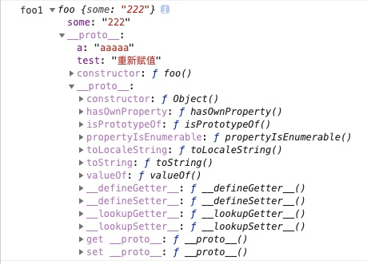

JS的原型、原型链一直是比较难理解的内容，不少初学者甚至有一定经验的老鸟都不一定能完全说清楚，更多的"很可能"是一知半解，而这部分内容又是JS的核心内容，想要技术进阶的话肯定不能对这个概念一知半解，碰到问题靠“猜”，却不理解它的规则！
let a = {}
let b = function () { }
console.log(a.prototype) // undefined
console.log(b.prototype) // { constructor: function(){...} }其实Object是一个全局对象，也是一个构造函数，以及其他基本类型的全局对象也都是构造函数：
function outTypeName(data, type) {
let typeName = Object.prototype.toString.call(data)
console.log(typeName)
}
outTypeName(Object) //[object Function]
outTypeName(String) // [object Function]
outTypeName(Number) // [object Function]JS通过new来生成对象，但是仅靠构造函数，每次生成的对象都不一样。
有时候需要在两个对象之间共享属性，由于JS在设计之初没有类的概念，所以JS使用函数的prototype来处理这部分需要被共享的属性，通过函数的prototype来模拟类：
当创建一个函数时，JS会自动为函数添加prototype属性，值是一个有constructor的对象。
以下是共享属性prototype的栗子：
function People(name) {
this.name = name
}
People.prototype.age = 23 // 岁数
// 创建两个实例
let People1 = new People('OBKoro1')
let People2 = new People('扣肉')
People.prototype.age = 24 // 长大了一岁
console.log(People1.age, People2.age) // 24 24为什么People1和People2可以访问到People.prototype.age？
原因是：People1和People2的原型是People.prototype，答案在下方的：构造函数是什么以及它做了什么。
__proto__和Object.getPrototypeOf(target)： 对象的原型__proto__是对象实例和它的构造函数之间建立的链接，它的值是：构造函数的`prototype。
也就是说：__proto__的值是它所对应的原型对象，是某个函数的prototype
Object.getPrototypeOf(target)全等于__proto__。
它是ES6的标准，兼容IE9，主流浏览器也都支持，MDN，本文将以Object.getPrototypeOf(target)指代__proto__。
__proto__:本段摘自阮一峰-ES6入门，具体解析请点击链接查看
__proto__属性没有写入 ES6 的正文，而是写入了附录。
原因是它本质上是一个内部属性，而不是一个正式的对外的 API，只是由于浏览器广泛支持，才被加入了 ES6。
标准明确规定，只有浏览器必须部署这个属性，其他运行环境不一定需要部署，而且新的代码最好认为这个属性是不存在的。
所以无论从语义的角度，还是从兼容性的角度，都不要使用这个属性，应该使用：Object.getPrototypeOf(target)（读操作）、Object.setPrototypeOf(target)（写操作）、Object.create(target)（生成操作）代替
出自《你不知道的在js》：在js中, 实际上并不存在所谓的'构造函数'，只有对于函数的'构造调用'。
上文一直提到构造函数，所谓的构造函数，实际上就是通过关键字new来调用的函数：
let newObj = new someFn() // 构造调用函数构造/new调用函数的时候做了什么：
Object.getPrototypeOf(target))指向构造函数的prototype对象。原型继承就是利用构造调用函数的特性：
SubType.prototype = new SuperType(); // 原型继承：SubType继承SuperType
// 挂载SuperType的this和prototype的属性和方法到SubType.prototype上Object.getPrototypeOf(target)指向函数的prototypeSubType.prototype原型类型有个缺点：多个实例对引用类型的操作会被篡改。
因为每次实例化引用类型的数据都指向同一个地址，所以它们读/写的是同一个数据，当一个实例对其进行操作，其他实例的数据就会一起更改。
来看个例子：
js function foo() { } const newObj = new foo() // 构造调用foo 返回一个新对象 const newObj__proto__ = Object.getPrototypeOf(newObj) // 获取newObj的原型对象 newObj__proto__ === foo.prototype // true 验证newObj的原型指向foo const foo__proto__ = Object.getPrototypeOf(foo.prototype) // 获取foo.prototype的原型 foo__proto__ === Object.prototype // true foo.prototype的原型是Object.prototype `` 如果用以前的语法，从`newObj`查找`foo`的原型，是这样的：js
newObj.__proto__.__proto__ // 这种关系就是原型链
```
可以用以下三句话来理解原型链：
newObj的原型是foo.prototype。foo.prototype也有它的原型Object.prototype。如果一个对象存在另一个对象的原型链上，我们可以说：它们是继承关系。
判断方式有两种，但都是根据构造函数的prototype是否在原型链上来判断的：
instanceof: 用于测试构造函数的prototype属性是否出现在对象的原型链中的任何位置语法：object instanceof constructor
let test = function () { }
let testObject = new test();
testObject instanceof test // true test.prototype在testObject的原型链上
testObject instanceof Function // false Function.prototype 不在testObject的原型链上
testObject instanceof Object // true Object.prototype在testObject的原型链上isPrototypeOf：测试一个对象是否存在于另一个对象的原型链上语法：prototypeObj.isPrototypeOf(object)
let test = function () { }
let testObject = new test();
test.prototype.isPrototypeOf(testObject) // true test.prototype在testObject的原型链上
Object.prototype.isPrototypeOf(testObject) // true Object.prototype在testObject的原型链上Object.prototypeObject.prototype是原型链的终点，所有对象都是从它继承了方法和属性。
Object.prototype没有原型对象：
const proto = Object.getPrototypeOf(Object.prototype) // null下面是两个验证例子，有疑虑的同学多写几个测试用例印证一下。
字符串原型链的终点：Object.prototype
let test = '由String函数构造出来的'
let stringPrototype = Object.getPrototypeOf(test) // 字符串的原型
stringPrototype === String.prototype // true 字符串的原型是String对象
Object.getPrototypeOf(stringPrototype) === Object.prototype // true String对象的原型是Object对象函数原型链的终点:Object.prototype
let test = function () { }
let fnPrototype = Object.getPrototypeOf(test)
fnPrototype === Function.prototype // true test的原型是Function.prototype
Object.getPrototypeOf(Function.prototype) === Object.prototype // true如果试图访问对象(实例instance)的某个属性,会首先在对象内部寻找该属性,直至找不到,然后才在该对象的原型(instance.prototype)里去找这个属性，以此类推
我们用一个例子来形象说明一下：
let test = '由String函数构造出来的'
let stringPrototype = Object.getPrototypeOf(test) // 字符串的原型
stringPrototype === String.prototype // true 字符串的原型是String对象
Object.getPrototypeOf(stringPrototype) === Object.prototype // true String对象的原型是Object对象当你访问test的某个属性时，浏览器会进行以下查找：
test 本身String.prototypeString.prototype的原型对象：Object.prototypeundefiend这种查找机制还解释了字符串为何会有自带的方法: slice/split/indexOf等。
准确的说：
String这个全局对象/函数上的。String函数的prototype。prototype中找到这些属性和方法。hasOwnProperty: 指示对象自身属性中是否具有指定的属性
语法：obj.hasOwnProperty(prop)
参数: prop 要查找的属性
返回值: 用来判断某个对象是否含有指定的属性的Boolean。
let test ={ 'OBKoro1': '扣肉' }
test.hasOwnProperty('OBKoro1'); // true
test.hasOwnProperty('toString'); // false test本身没查找到toString 这个API是挂载在object.prototype上，所有对象都可以使用，API会忽略掉那些从原型链上继承到的属性。
你知道构造函数的实例对象上有哪些属性吗？这些属性分别挂载在哪个地方？原因是什么？
function foo() {
this.some = '222'
let ccc = 'ccc'
foo.obkoro1 = 'obkoro1'
foo.prototype.a = 'aaa'
}
foo.koro = '扣肉'
foo.prototype.test = 'test'
let foo1 = new foo() // `foo1`上有哪些属性,这些属性分别挂载在哪个地方
foo.prototype.test = 'test2' // 重新赋值上面这道是考察JS基础的题，很多人都没说对，原因是没有彻底掌握this、原型链、函数。
this.some：foo1对象的属性通过构造调用foo的this指向foo1，所以this.some挂载在foo1对象下。
属性查找: foo1.some
foo1.some直接读取foo1的属性。
foo1.test、foo1.a：foo1对象的原型根据上文提到的：构造/new调用函数的时候会创建一个新对象(foo1)，自动将foo1的原型(Object.getPrototypeOf(foo1))指向构造函数的prototype对象。
构造调用会执行函数，所以foo.prototype.a = 'aaaaa'也会执行，单就赋值这个层面来说写在foo外面和写在foo里面是一样的。
属性查找：foo1.test、foo1.a
foo1本身没有找到,继续查找foo1的原型Object.getPrototypeOf(foo1)上找到了a和test，返回它们，停止查找。foo1.obkoro1和foo1.koro：返回undefinedfoo.obkoro1、foo.koro函数在JS中是一等公民，它也是一个对象, 用来模拟类。
这两个属性跟foo1没有关系，它是对象foo上的两个属性(类似函数的:arguments/prototype/length等属性)，称为静态属性。
它们只能通过foo.obkoro1和foo.koro来访问。
上面那个例子中的foo1.test的值是什么？
foo.prototype.test = 'test'
let foo1 = new foo() // `foo1`上有哪些属性,这些属性分别挂载在哪个地方
foo.prototype.test = 'test2' // 重新赋值foo1.test的值是test2，原因是：foo1的原型对象是Object.getPrototypeOf(foo1)存的指针，指向foo.prototype的内存地址，不是拷贝，每次读取的值都是当前foo.prototype的最新值。
打印foo1：

写了好几天，之前网上很多图文博客，那些线指来指去，就我个人看来还是比较难以理解的，所以本文纯文字的形式来描述这些概念，相信认真看完的同学肯定都有所收获，如果没看懂的话，建议多看几遍，这部分概念真的很重要！
PS：实际上还有很多引申出来的东西没写全，准备放到其他文章中去写。
前端进阶积累、公众号、GitHub、wx:OBkoro1、邮箱：obkoro1@foxmail.com
以上2019/8/25
作者：OBKoro1
参考资料：